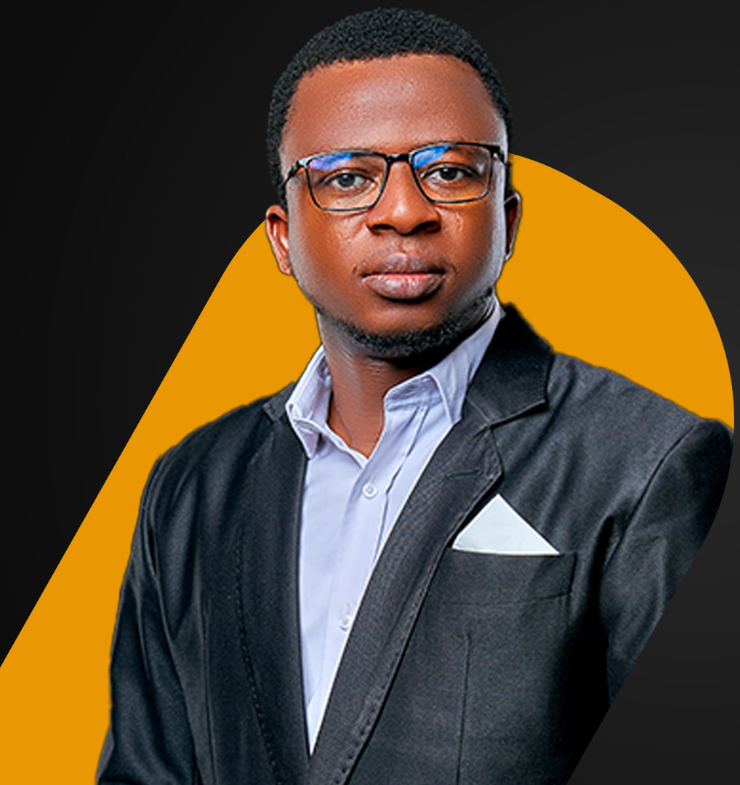

Personal branding
& image
Affirmer votre différence et inspirer confiance aux bonnes personnes.
Construire mon imageJ’aide les marques, les leaders et les talents à devenir visibles, crédibles et utiles. Avec une direction claire, des contenus qui comptent et une image protégée.
ANCRÉ EN AFRIQUE. TOURNÉ VERS L’IMPACT.

Quatre expertises complémentaires pour aligner ce que vous êtes, ce que vous montrez et ce que vous construisez.
Affirmer votre différence et inspirer confiance aux bonnes personnes.
Construire mon imageDonner un cap à vos contenus et un objectif à votre présence digitale.
Structurer ma présencePrévenir les risques numériques et protéger votre capital confiance.
Protéger mon imageIdentifier votre talent, clarifier votre projet et passer à l’action.
Activer mon potentielQuelques réalisations qui montrent comment je relie stratégie, contenu, production et transmission.
Accompagnement du lancement officiel au Burkina Faso : coordination, communication, mobilisation des médias et production de contenus.
Contribution
Relier la présentation de la solution, la rencontre avec les médias et la prise de parole de la marque.
Audit digital, stratégie de communication, structuration de la présence sur les réseaux sociaux et couverture en direct.
Contribution
Rendre l’information institutionnelle plus accessible et renforcer la présence digitale.
Captation multicaméra, réalisation de podcasts, diffusion d’événements et création de contenus institutionnels.
Contribution
Prolonger la portée d’un événement et valoriser les prises de parole.
Accompagnement des talents et des professionnels autour de la connaissance de soi, des priorités et du projet.
Contribution
Relier les aspirations à des actions concrètes et à un suivi des progrès.
« Un talent ne devrait pas rester invisible.
Une ambition mérite une direction. »
Je suis Euloge OLOU. Entrepreneur, consultant, formateur et coach professionnel certifié. Depuis plus de 17 ans, j’évolue à la croisée du contenu, de la stratégie, de l’humain et de la sécurité.
Du Bénin au Burkina Faso, mon parcours s’est construit sur le terrain : dans les médias, auprès des entreprises et aux côtés de celles et ceux qui cherchent leur voie.
Découvrir mon parcoursJeunes en quête de direction, professionnels en reconversion : construisons une trajectoire qui vous ressemble et un plan pour avancer.
Démarrer mon accompagnementFaire le point sur vos forces, vos aspirations et ce qui vous freine.
Transformer une envie de changement en projet concret et réaliste.
Définir vos prochaines étapes, suivre vos progrès et ajuster votre parcours.
Trois univers, une même ambition : créer de la valeur par le contenu, la stratégie et la transmission.
Donner une forme et une audience à vos idées : production audiovisuelle, podcasts, captation et live streaming.
Découvrir OLOUSTREAMClarifier votre positionnement, faire vivre votre marque et construire une présence digitale qui sert vos objectifs.
Découvrir La GazelleMettre en lumière les parcours, les idées et les initiatives qui font avancer l’Afrique.
Découvrir Wadjo TVClarifions votre besoin et construisons la suite.